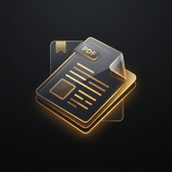

DJS PDFDJS PDF 1.2.1
저장해 둔 문서와 책갈피를 이어서.
PDF 열기·읽기·공유를 더 안정적으로 개선했습니다.
기존 앱 위에 업데이트하세요
앱에 저장된 문서, 책갈피, 읽던 페이지를 유지하도록 기존 앱과 같은 서명과 저장 공간을 사용합니다.
기존 앱 삭제·데이터 초기화는 하지 마세요. 서명이 다르다는 설치 오류가 나오면 기존 앱을 삭제하지 말고 설치를 중단하세요.
업데이트 방법
- 위 버튼으로 APK를 받거나 DJS PDF 앱에서 업데이트 확인 → 지금 업데이트를 누릅니다.
- 앱에서 설치 권한 필요 안내가 나오면 설정으로 이동을 눌러 Android 설정의 이 출처의 앱 허용을 켭니다. DJS PDF로 돌아온 뒤 업데이트 확인 → 지금 업데이트를 한 번 더 눌러 다운로드를 시작합니다.
- 받은 APK를 열고 Android 설치 화면에서 업데이트를 선택합니다.
- DJS PDF를 열어 최근 문서와 책갈피를 이어서 사용합니다.
1.2.0에서 설치 출처를 처음 허용하면 다운로드가 자동으로 재개되지 않습니다. 설정에서 돌아온 뒤 위의 업데이트 버튼을 다시 눌러 주세요. 이미 해당 출처가 허용돼 있으면 이 설정 단계는 건너뜁니다.
이번에 개선한 점
- 같은 이름의 다른 PDF를 구분하고 문서와 책갈피를 함께 안전하게 저장합니다.
- 암호 재시도·취소와 손상 파일 처리를 개선해 읽던 문서를 유지합니다.
- 검색·페이지 맞춤·연속 스크롤·모바일 화면과 현재 문서 공유를 개선했습니다.
- PDF 실행 경계와 업데이트 파일의 무결성 확인을 강화했습니다.
검증 범위와 설치 파일 정보
실제 SM-S942N의 1.2.0→1.2.1 업데이트에서 기존 문서·책갈피·앱 설정 보존을 확인했습니다. 합성 PDF 열기, 책갈피 재열기, Android 볼륨키 이벤트, 공유창 호출과 로컬 수신 파일도 검사했습니다. 기종별 동작과 일반 수신 앱의 실제 발송은 다를 수 있습니다. 전체 검증 범위는 릴리스 노트를 확인하세요.
- 패키지
- com.ldj.djspdf
- 파일 크기
- 1,152,206 bytes
- APK SHA-256
6fda660a48d57b0226014dce38dfe5ab2d555069eaf5d06d52dee08bcc2ada63- 서명 SHA-256
63c4d2868987dfc9be77e3321df5925a7051e585e49538e5bdfac0df45a5a9e5
과거 버전에서 이미 덮어쓴 원본 PDF는 이번 업데이트로 복구할 수 없습니다.